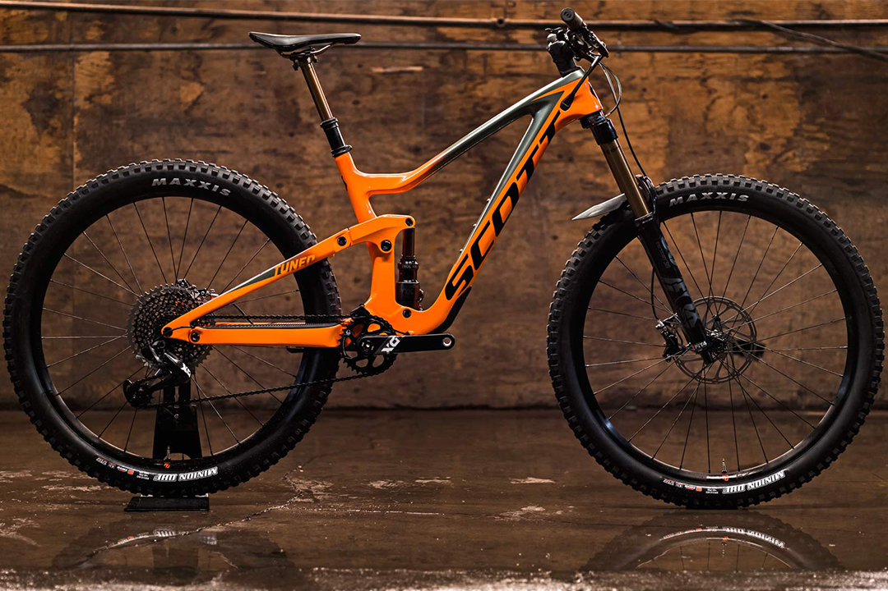
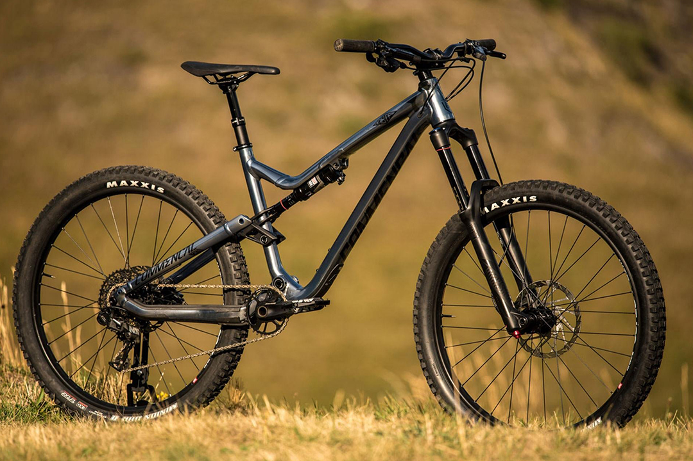

Ендуро — дисципліна велоспорту, змагання в якій проходять на дорогах з різним покриттям і по пересіченій місцевості з дотриманням заданого графіку руху на великі відстані протягом декількох днів. Для даної дисципліни використовують відповідну спортивну велосипедну техніку. Крім змагання на регулярність руху в ендуро включено виконання в найкоротший час умов додаткових змагань.Змагання проходять по замкнутому колі на досить складній місцевості з використанням доріг загального користування.

Зазвичай в ендуро використовують велосипеди з однокоронною вилкою (120-180мм) і заднім амортизатором(100мм). Такі велосипеди здатні витримувати великі навантаження і відрізняються від інших мтб велосипедів високою маневреністю.